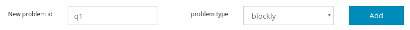
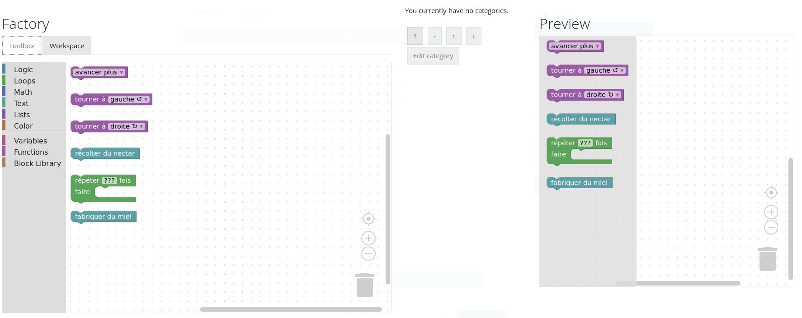
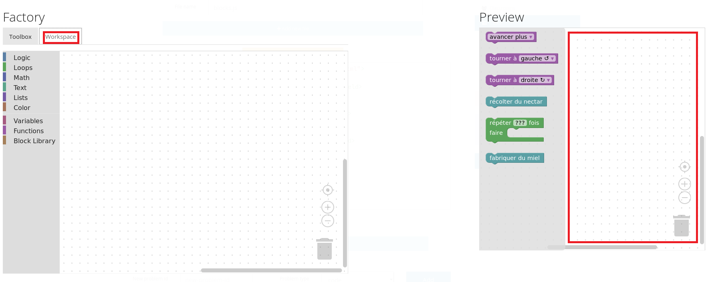
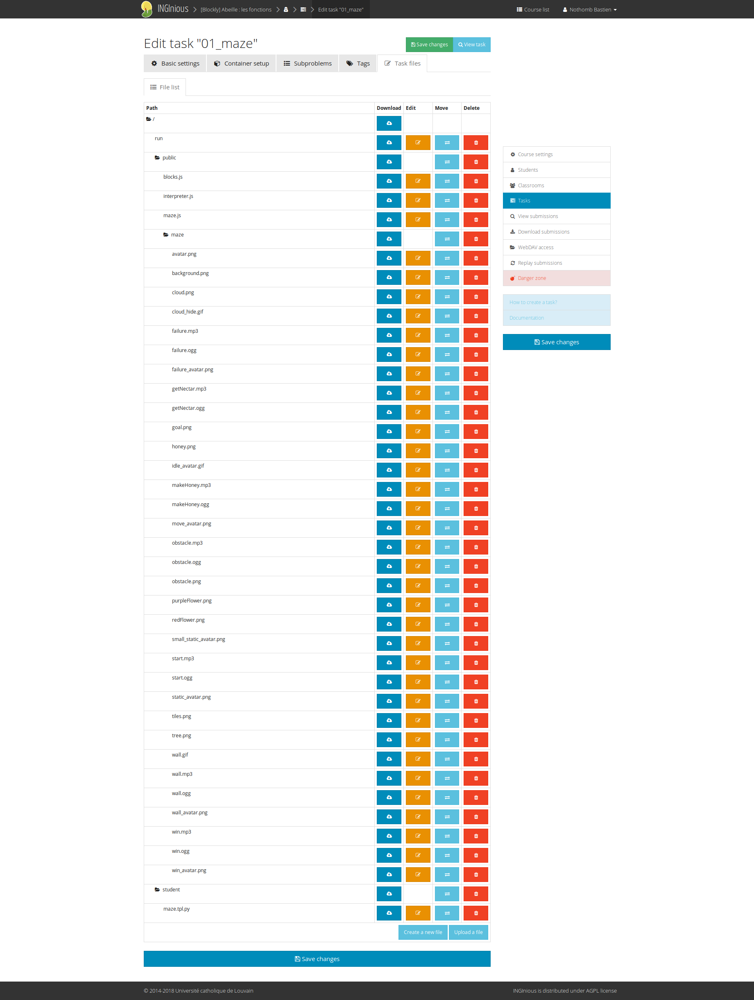

OpenWeek 2018
Une introduction à Blockly
https://openweek.github.io/presentations/presentation-blockly/index.htmlBastien Nothomb - bastien.nothomb@student.uclouvain.be
Objectif du projet
- Réaliser des exercices visuels
- Pour de jeunes enfants
- Afin d'apprendre à programmer en s'amusant
Blockly
- Langage de programmation visuel
- Des blocs tout faits ou créés à l’aide de la Blockly Developer Tools
- Développé par Google
- Intégré dans INGInious
Blockly

Une tâche Blockly
se compose de:
- un subproblem de type blockly 
- une toolbox: les blocs dont disposent les étudiants
- un workspace: espace dans lequel organiser les blocs pour répondre à l’exercice (peut être pré-rempli)
- et plein d'autres choses
La toolbox Blockly
Le workspace Blockly
Les blocs customs
- Tous les blocs utilisés dans l’exemple sont des blocs créés spécialement pour l’exercice.
- Il existe déjà beaucoup de blocs que vous pouvez utiliser dans blockly
| Personnalisés | Blocs standards |
|---|---|
 |
 |
Les blocs customs

Les blocs customs
|
|

|
L'architecture inginious
Le fichier run
- C’est le fichier qui exécute les tests sur le serveur d’INGInious
Le fichier task.yaml
-
Vous pouvez directement configurer la tâche sur votre instance d’INGInious qui tourne sur votre vm, pour récupérer un task.yaml bien formaté.

- Faites attention que le type soit bien blockly
Installation de Blockly
- Le plus simple est d’utiliser la VM, elle est disponible avec des instructions d’installation sur ce repo
- Sinon, vous pouvez installer si vous le désirez:
Do et don't
- Le projet est Open Source, donc spécifiez bien toutes vos méthodes pour que les futurs contributeurs puissent comprendre ce que vous faites.
- Récupérez toutes les exceptions et transmettez les messages dans un langage compréhensible par les élèves (ex:ArithmeticException)
Liens utiles
Récapitulatif
- Installer la VM
- Lancer et comprendre les tâches existantes
- Créer ses propres tâches (simple puis avec visuel)
- Les mettre sur ce repo